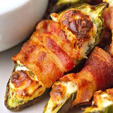

Jalapeño Poppers

Ingredients:
- 8 oz Package of Cream Cheese
- Bacon
- Powdered Ranch Packet
Steps:
- Take a softened package of ranch powder and mix thoroughly with cream cheese
- Cut the tops off the jalapenos and cut them in half length wise, then scoop out all the seeds and "meat" of the jalapeno
- Fill each jalapeno with the mixed cream cheese
- Cut bacon to match the length of the jalapenos and place one slice over the top of each one
- Bake at 400F for 25-35 min or until the bacon is fully cooked